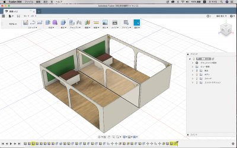

[課題]学校に設置したい多くの人が共感できるものをプロトタイピングする
制作したもの：教室と隣の教室との壁を無くした新しい教室

制作理由：小学校や中学校、高校で隣のクラスに入る用事が会った時
大体の人は入りずらかったりする。理由は様々だと思うが、一つは教室の中が
見えずらいのと、もう一つは友達以外の生徒から視線を気にしてしまうことがある。
こういった理由を解決するためにこの教室を考えた。こうすることですぐに隣の教室の
状況が把握でき、移動も簡単にできる。また情報を共有することができるので、合同授業
ができる。
感想
コンセプトを考えるときに意識したのは、自分が学校で体験した
困ったことを思い出しながら紙に書いてリストアップし、コンセプトを
決めていった。fusionは決めたコンセプト通りにモデリングできるか
不安だったができるだけシンプルで一目見たらわかるようなデザインに仕上げた。